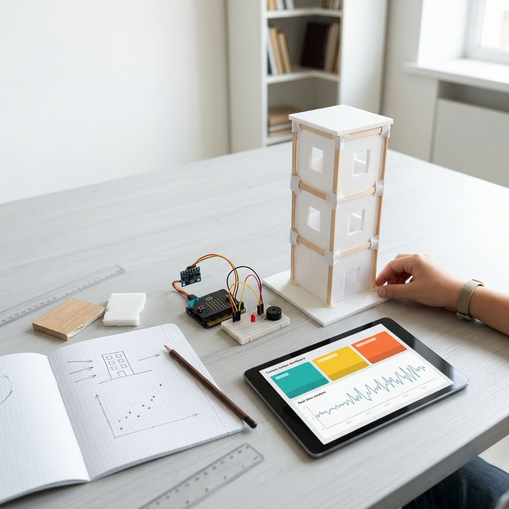
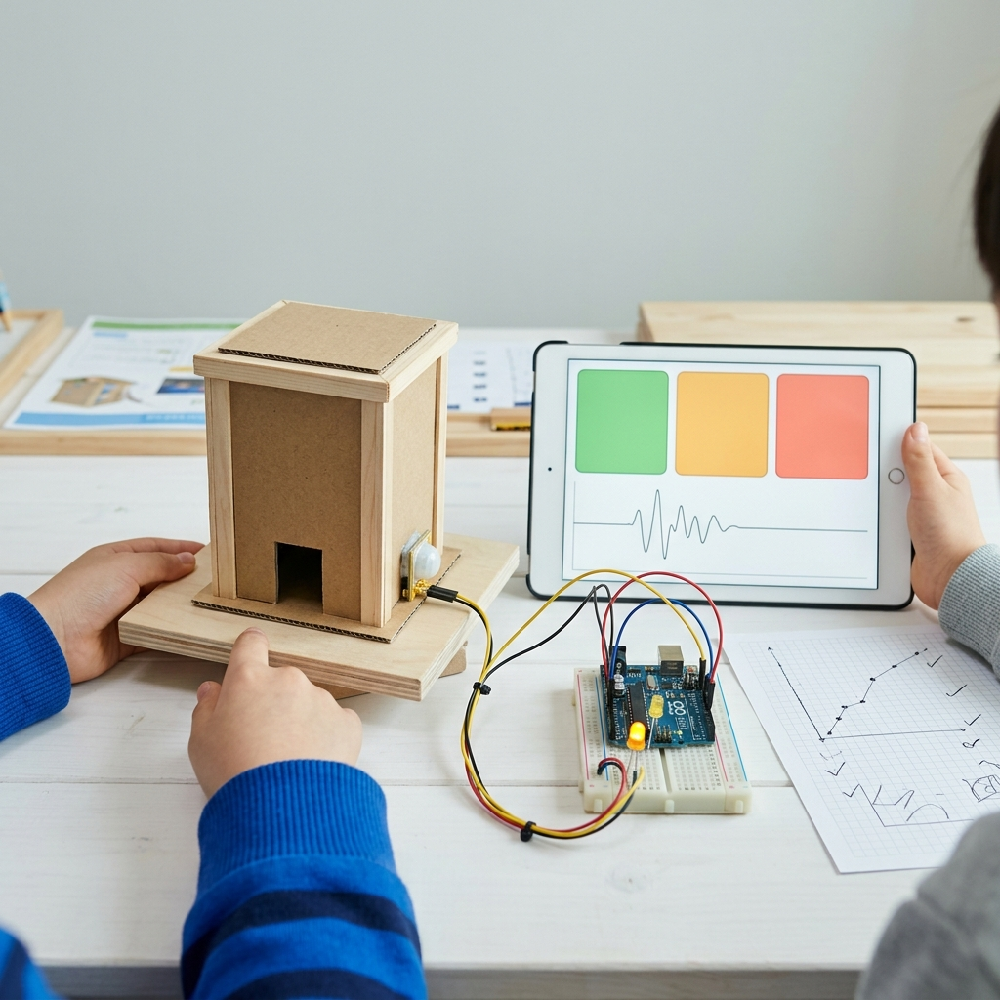

🌏 호주 University of Tasmania 대학 강의 (공학·컴퓨팅)
호주 UTAS에서 대학생을 대상으로 공학·컴퓨팅 과목을 영어로 강의한 경력이 있습니다.
1:1 AI Project Mentoring
초6 영재원 과제처럼 질문을 세우고, 직접 실험하고, 데이터를 앱과 발표로 완성하는 1:1 프로젝트 수업입니다.

Tutor Profile
호주 UTAS에서 대학생을 대상으로 공학·컴퓨팅 과목을 영어로 강의한 경력이 있습니다.
해외우수과학자(Brain Pool)로 선정되어 위성·센서 데이터를 AI로 분석하는 실무 연구를 수행했습니다.
대학에서 Python 프로그래밍과 AI 활용을 15주 커리큘럼으로 강의하고 있습니다. (현직 겸임교수)
Project 01
아이는 먼저 질문을 정하고, 간단한 모형을 흔들어 데이터를 모읍니다. 그다음 앱 화면에서 약함·주의·강함 상태를 직접 설계합니다.

어느 정도 흔들리면 위험하다고 알려야 할까?
수치는 수업용 예시입니다. 실제 건물 안전 판정이나 내진 평가 결과로 사용하지 않습니다.
Method
수업은 네 단계로 반복됩니다. 아이가 만든 결과물을 보며 다음 질문을 정하고, 작게 실험하고, 말로 설명합니다.
“왜 흔들림이 다르게 보일까?”처럼 아이가 직접 물을 수 있는 질문을 고릅니다.
센서, 종이 모형, 앱 화면처럼 손으로 만지고 고칠 수 있는 산출물을 만듭니다.
결과가 예상과 다를 때 왜 그런지 다시 묻고 그래프와 기록으로 남깁니다.
3분 발표와 수업 리포트로 아이가 무엇을 만들고 이해했는지 정리합니다.
Outcomes
센서값, 버튼, 상태 표시처럼 아이가 직접 조작할 수 있는 화면을 만듭니다.
질문, 실패, 수정 과정을 짧은 기록과 이미지로 남겨 다음 수업의 재료로 씁니다.
“무엇을 만들었고 왜 그렇게 바꿨는지”를 자기 말로 설명하게 합니다.
Curriculum
영재원형 탐구 방식은 시험 대비 문구가 아니라 수업의 구조입니다. 관찰하고, 만들고, 실험하고, 발표하는 힘을 기릅니다.
블록 코딩, 간단한 앱, 센서 실험으로 “내가 만든다”는 경험을 먼저 만듭니다.
Python, 데이터 분석, 웹앱 프로젝트로 탐구를 조금 더 정교하게 확장합니다.
관찰 → 제작 → 실험 → 발표. 매주 결과를 보고 다음 단계를 정합니다.
4주 체험 가격 · 상담 시 안내
Teacher
화려한 AI 말보다 중요한 것은 질문을 좁히고, 검증하고, 다시 설명하는 습관입니다. 수업은 그 습관을 결과물 중심으로 훈련합니다.
“정답을 맞혔다”보다 “왜 이 기준을 골랐는지 설명했다”를 기록합니다.
AI가 대신 쓰게 하지 않고, 아이의 말과 실험 기록을 정리하는 도구로 씁니다.